| ・ 最終卒論発表リハーサル (H25.02.19) | |||
去年は前日にやりましたが、流石に修正対応が難しいので今年は1日前にやります！残念ながら村田先生は大事な会議があったので、助教の人だけでみることになりました。これはまさに終わりなきデスマッチの予感。501Fに入るときは2人でも、出るときは1人。 |
|||
|
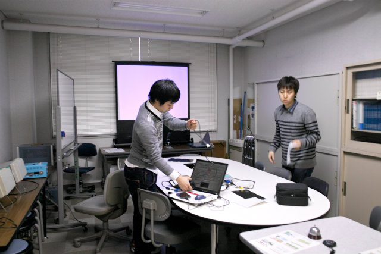
さてやるぜ！ |
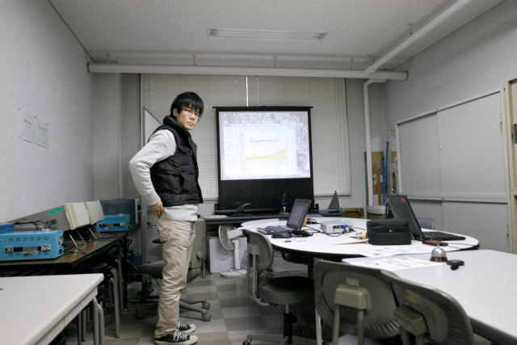
まずはK林くんから | ||
|
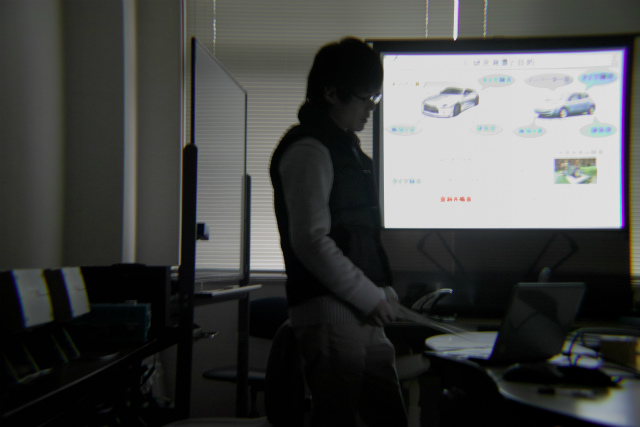
丁寧にスライドを説明しような |
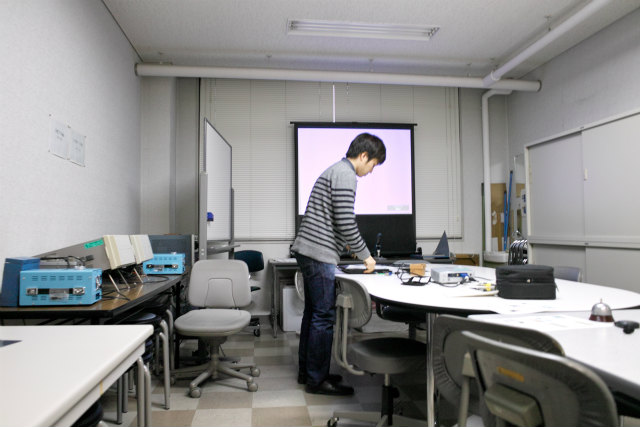
そしてN島くん | ||
|
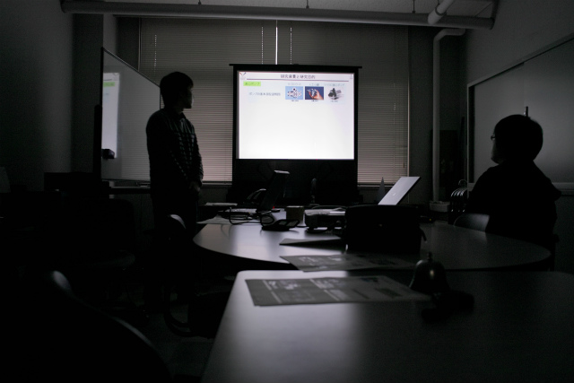
小さいものから大きいものまで |
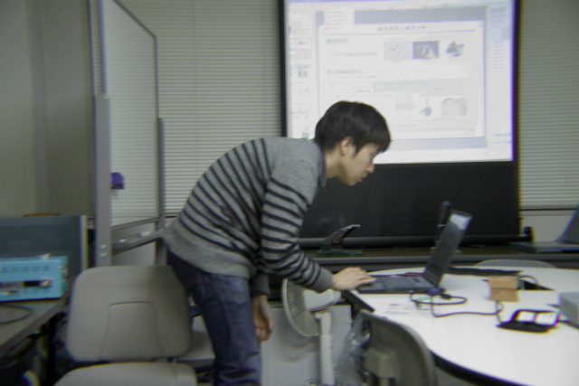
1枚ごとにチェック | ||
|
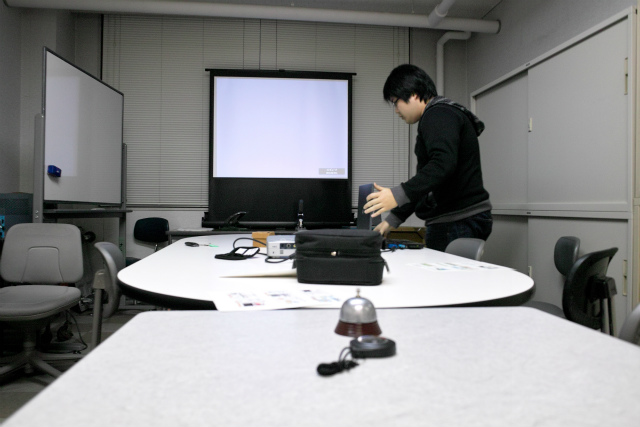
次はムーくん |
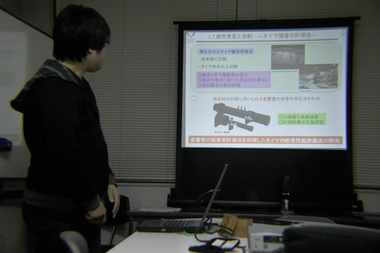
気持ち分かるけど、1枚スライド減らそうな | ||
|
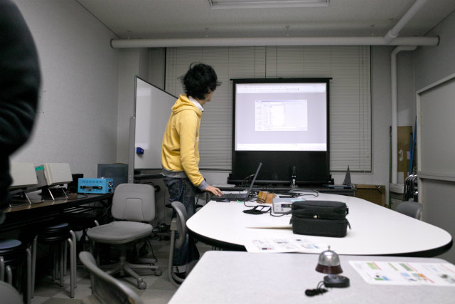
H井くんだ！ |
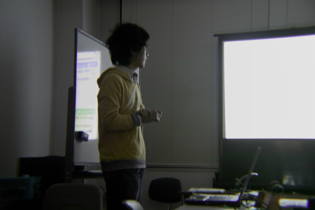
え？10分たったけど | ||
|
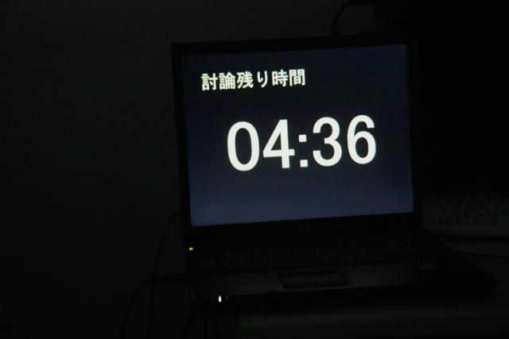
討論時間に突入してるんですけど |
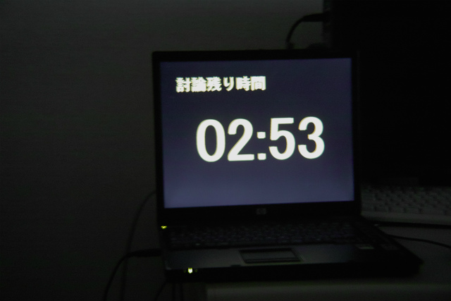
にゃー、まったり話しすぎるねんって | ||
|
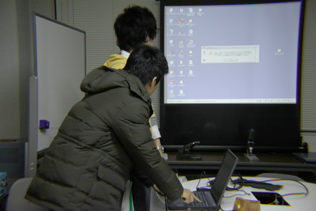
次はH林くん |
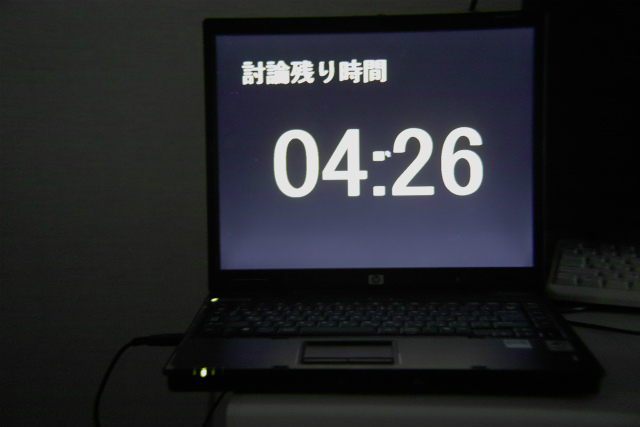
え？ | ||
|
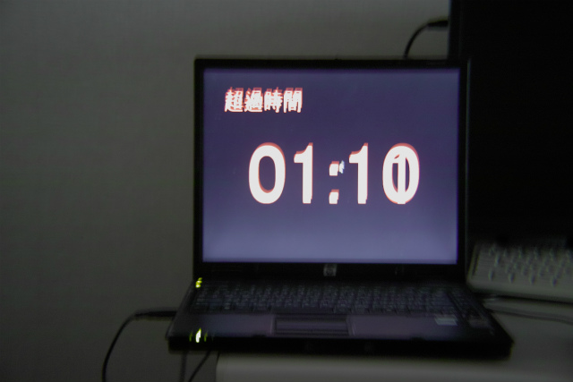
え！ |
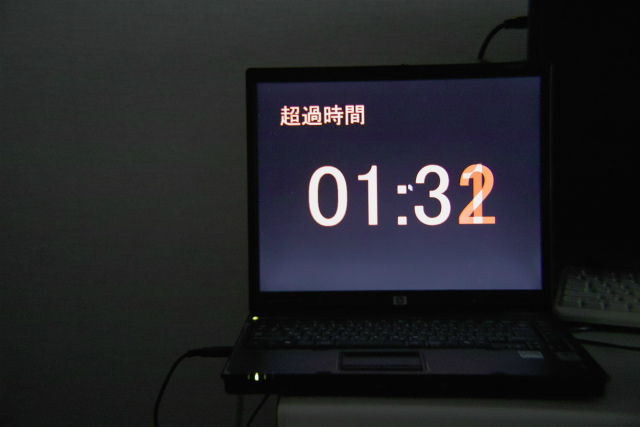
やめてください助教が泣いてしまいます | ||
|
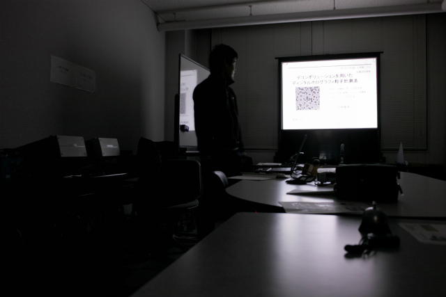
君がッ 泣くまで プレゼンをやめないッ! |
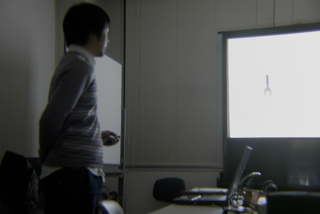
最後はF木くん | ||
|
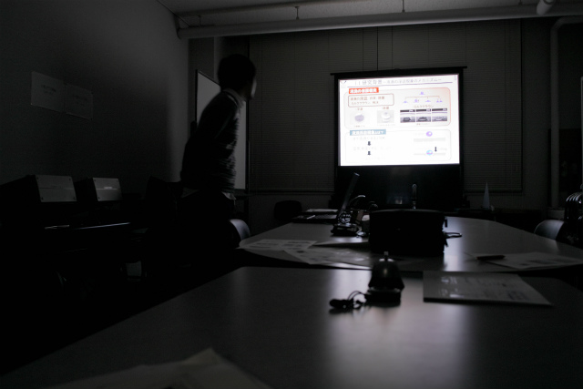
言い方で聴衆の受取り方は変わりますからねー |
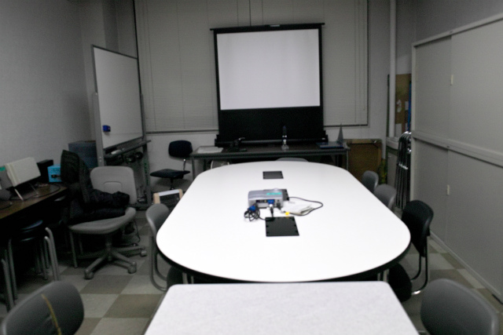
そして誰もいなくなった | ||